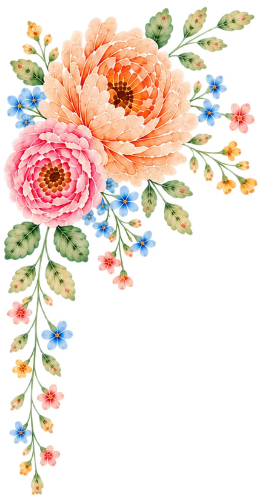
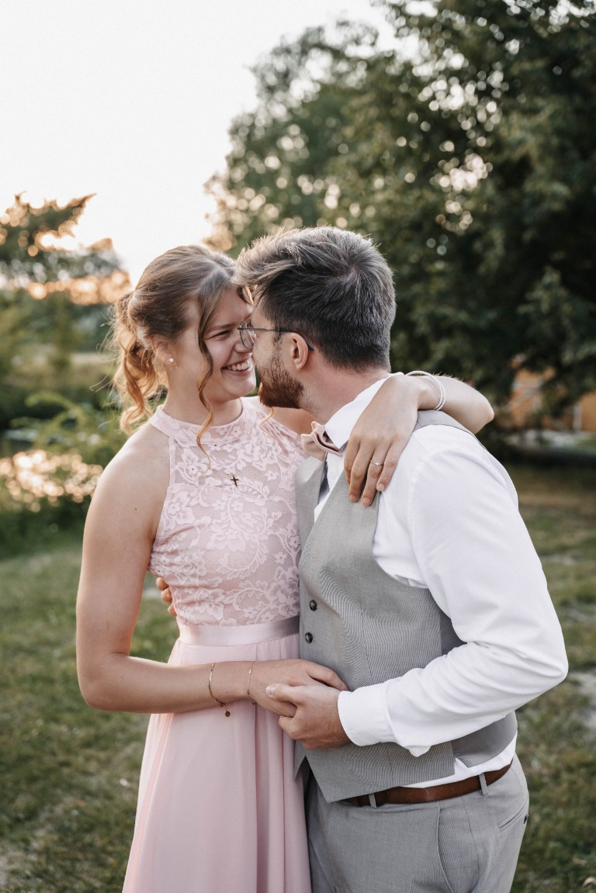
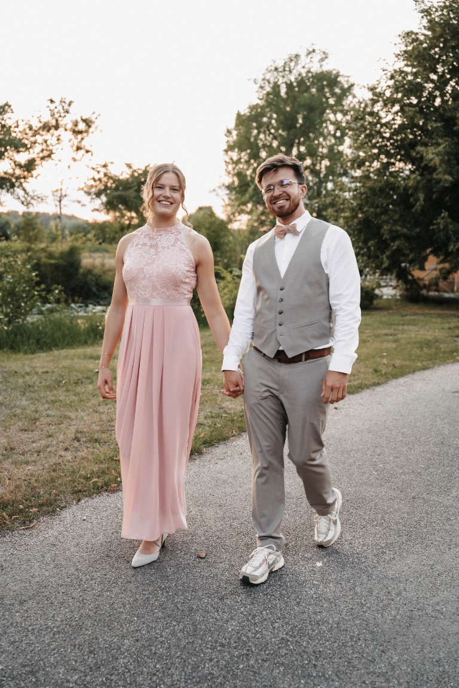
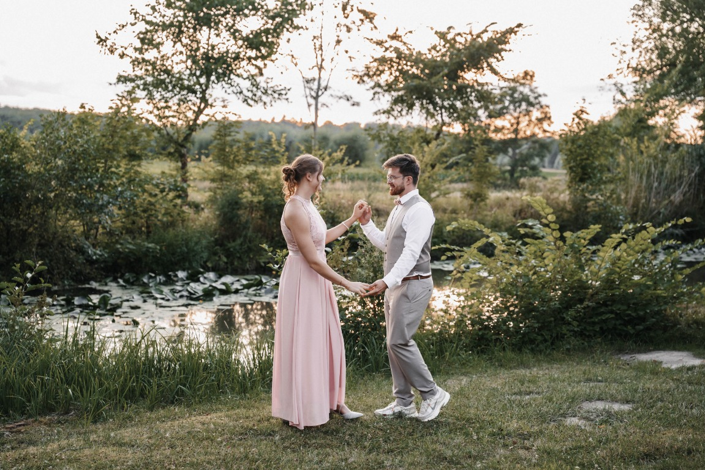

Pia & Martin
01. Mai 2027
♡
Seid niemand etwas schuldig, außer daß ihr einander liebt; denn wer den anderen liebt, hat das Gesetz erfüllt
Römer 13,8
WIR FREUEN UNS AUF EUCH
Es dauert nicht mehr „Lange“ – dann sagen wir endlich „Ja“!
—Tage
—Stunden
—Minuten
—Sekunden
Damit ihr uns noch ein bisschen besser kennenlernt, teilen wir hier drei unserer größten Gemeinsamkeiten, die uns verbinden:
Jesus als das Zentrum unseres Lebens
Unsere Geschichte begann in der Jugend unserer Gemeinde. Wir durften uns durch Gottes Führung begegnen und wollen auch unsere Zukunft gemeinsam mit ihm an unserer Seite gestalten. Ihm verdanken wir alles und wir wollen seine Liebe weitergeben.
Unsere Freude am Ausprobieren (und das Geheimnis der Hawaii-Pizza)
Wir lieben es, neue Sachen auszuprobieren – besonders, wenn es um gutes Essen oder Sport geht! Unsere gemeinsame Story startete nach einer Jugendstunde am Freitagabend. Pia bestellte sich eine Hawaii-Pizza, schaffte sie nicht ganz und gab Martin den Rest mit nach Hause (Insider behaupten, sie wusste ganz genau, dass Martin da nicht Nein sagen kann...). So kam der Stein ins Rollen und unsere gemeinsame Geschichte begann. Seitdem testen wir leidenschaftlich gern neue Restaurants und kreative Gerichte. Auch sportlich wird es bei uns nie langweilig: Von Bouldern, Volleyball und Krafttraining über Tennis, Diskuswerfen und Yoga bis hin zu Fahrradfahren und Joggen ist alles dabei. Martin hat schnell gelernt, dass Pias Energie grenzenlos ist und ein „fauler“ Tag auf dem Sofa zur großen Seltenheit gehört!
Unsere Unternehmungslust
Das Entdecken neuer Orte gehört zu unseren liebsten Beschäftigungen. Ob beim Wandern im Harz und der Sächsischen Schweiz, beim Städtetrip mit Freunden in London und Hamburg oder bei ausgiebigen Fahrradtouren durch Brüssel, Köln und Maastricht – wir mögen es, unterwegs zu sein, Erinnerungen zu sammeln und neue Orte gemeinsam zu erkunden.
Wir können es kaum erwarten, das nächste große Kapitel aufzuschlagen – und am 01.05.2027 schreiben wir unsere Geschichte gemeinsam mit euch weiter!


TAGESABLAUF
Unser Ablauf
Die wichtigsten Momente unseres Hochzeitstages im Überblick.
Trauung
Sektempfang
Gruppenfotos
Festessen
Programm Teil 1
Tortenanschnitt
Programm Teil 2
Hochzeitstanz
GEBT UNS BESCHEID
Seid ihr dabei?
Bitte meldet euch bis zum 14. März 2027 zurück.
Geschenkideen
Unsere Hochzeit mit euch feiern zu dürfen, ist unser größtes Geschenk. Falls ihr trotzdem noch eine Inspiration braucht, schaut gerne in dieser Liste nach. Bitte denkt daran, etwas abzuhaken, wenn ihr es uns schenken wollt. Wenn ihr nichts Passendes findet, freuen wir uns über eine finanzielle Starthilfe für unser gemeinsames Leben als Ehepaar.
Gemeinsame Erlebnisse
Hier kommt ihr zu den Fotos, die wir am 01.05. gemeinsam machen!
Dresscode
Ihr wisst noch nicht, was ihr anziehen sollt? Kein Problem! Zumindest bei den Farben können wir euch helfen. Tragt gerne ein Kleidungsstück oder Accessoire passend zu unserer Farbskala.
SO FINDET IHR UNS
Anfahrt & Orte
Trauung
Martin-Luther-Kirche
Loher Str. 12
32545 Bad Oeynhausen
Feier
Gut Böckel
Rilkestraße 18
32289 Rödinghausen-Bieren
GUT ZU WISSEN
Häufige Fragen
Die wichtigsten Antworten auf einen Blick.
Bis wann sollen wir uns anmelden?
Bitte gebt uns bis zum 14. März 2027 Bescheid.
Dürfen wir eine Begleitperson mitbringen?
Bitte richtet euch nach der Anzahl der Personen auf eurer Einladung. Bei Fragen meldet euch gerne direkt bei uns.
Können wir das Programm mitgestalten?
Gerne. Wenn ihr etwas zu dem Programm beisteuern wollt, meldet euch gerne bei Liane mit euren Ideen und Vorschlägen (WhatsApp: +49 1577 2115961).
Wo können wir parken?
Ein paar Meter von der Kirche entfernt gibt es einen Netto. Dort könnt ihr am 01.05.2027 parken.
Hier findet ihr den Weg dahin.
Die Feier:
Vor der Location ist ein großer Schotterparkplatz, wo genügend Parkplätze vorhanden sind.
Was ist, wenn wir nicht kommen können?
Schade, dass es nicht möglich ist. Wir bitten euch trotzdem, den Anmeldebogen auszufüllen, damit wir auch darüber zeitnah Bescheid wissen.